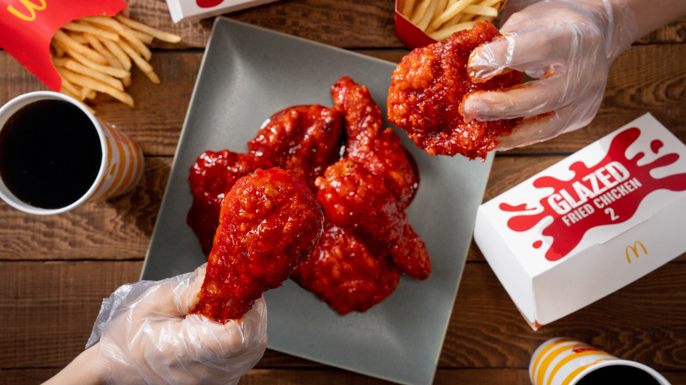
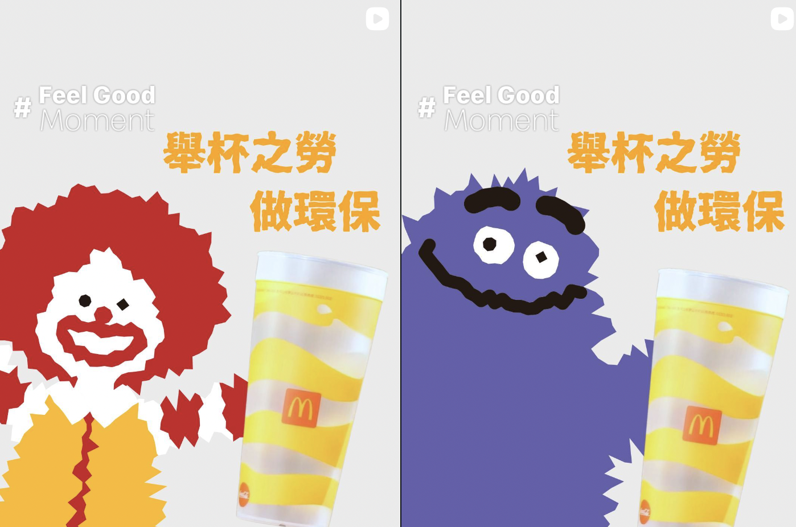
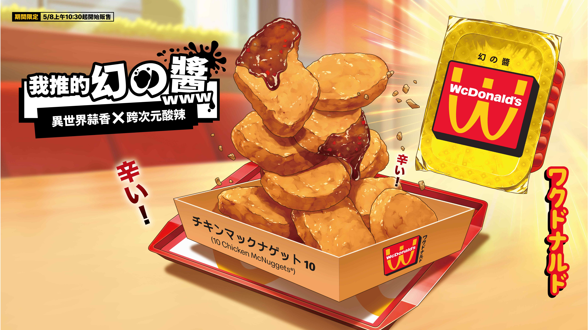
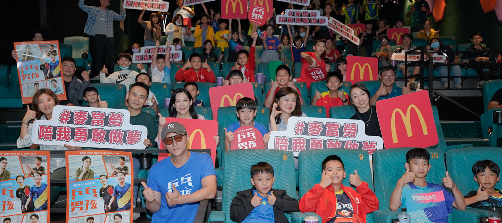
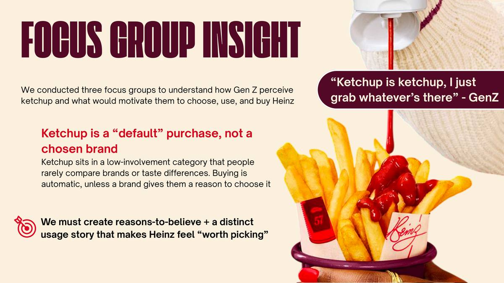
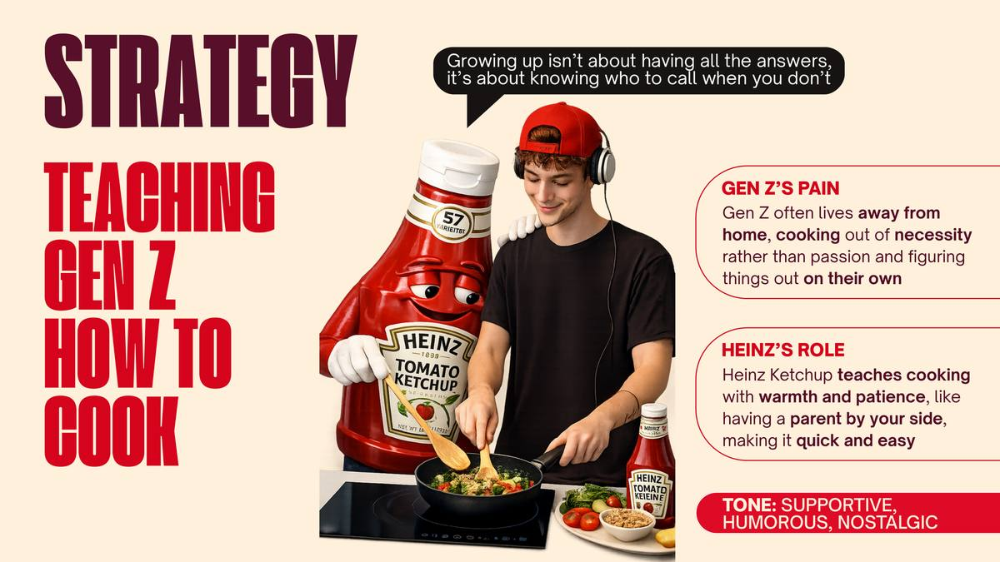
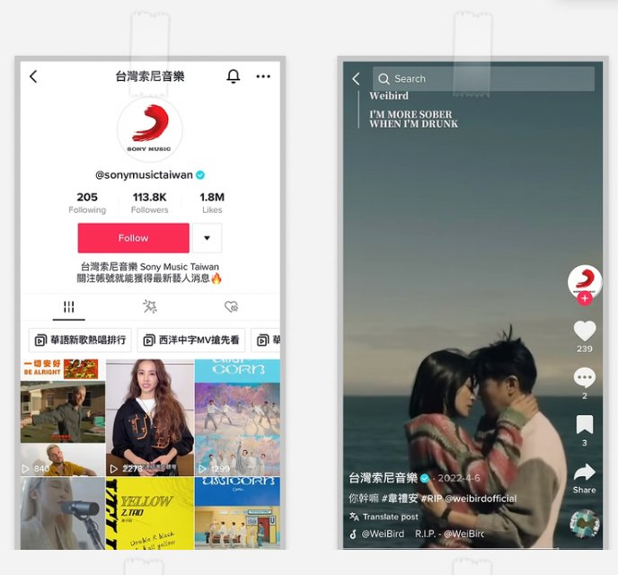
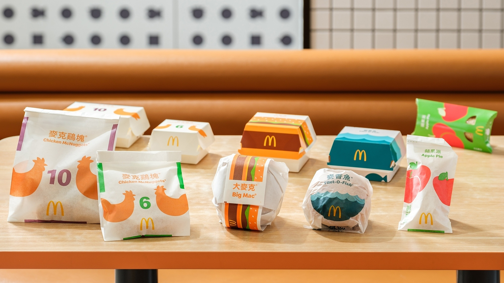
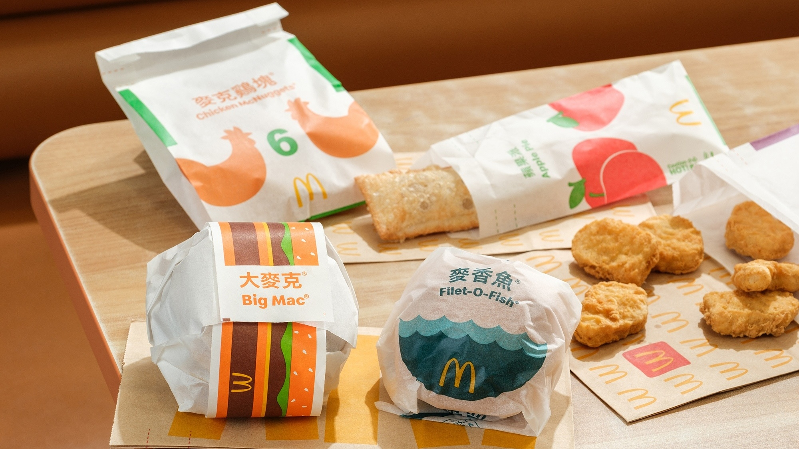
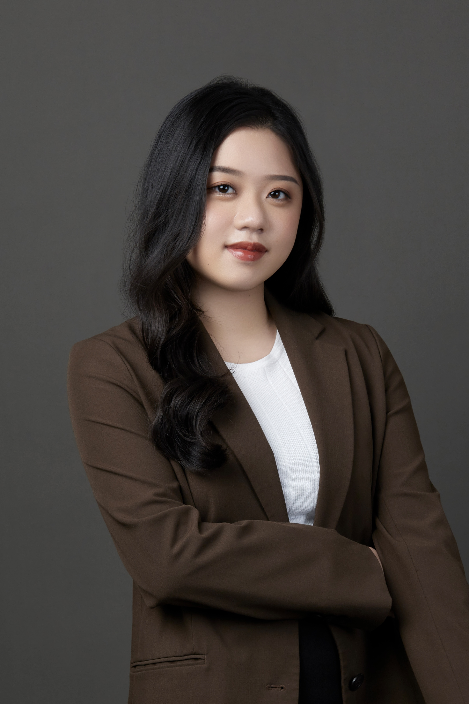

Four case studies spanning integrated PR campaigns, sustainability issues communications, consumer insight-led strategy, and digital content, each showing a different dimension of how I think and work.
Over two years at Golin Taipei, I built and ran PR communications for McDonald's Taiwan, one of the agency's largest consumer accounts, progressing from Account Executive to Account Supervisor. My work spanned product launches, digital services, sustainability and community campaigns, managing everything from press strategy to KOL negotiation to crisis response.

Launching Da Hong Pao Sichuan Pepper Fried Chicken required more than awareness. In fast food, consumers default to the familiar. The product needed to feel credible before it could feel exciting.
I designed a two-wave KOL approach built around the consumer decision journey. Culinary expert 詹姆士 launched the evening before go-live, speaking to food-curious audiences about flavour depth and quality. Food creator 吃貨豪豪 posted on launch day to convert that anticipation into purchase intent. Each creator served a distinct role in the funnel.
As project owner, I delivered the press release, managed media outreach across food and lifestyle channels, and handled KOL negotiation and briefing end-to-end.
Beyond KOL, I built a brand social co-creation layer: coordinating an official McDonald's social post and negotiating 7 brand comment partnerships with Taiwan consumer brands including Milksha, Kuaike and Kadina. I secured 3 additional brand-initiated posts beyond the original brief, extending the campaign's organic reach through brands that spoke directly to the same audience.

As a fast food brand, McDonald's also faced genuine scepticism about whether its environmental commitments meant anything. The campaign had to feel effortless and credible at the same time.
If the action felt small enough, participation would follow. The cultural phrase "舉手之勞" (a small effort) gave us a hook that was already embedded in everyday Taiwanese language.
I developed the communications strategy around a single reframe: "舉手之勞" became "舉杯之勞做環保": lifting a reusable cup as a meaningful environmental choice. I coordinated multi-brand partnerships with 6 major Taiwan brands and NGO RE-THINK, and managed full KOL execution across digital and PR channels to amplify at scale.

The brief was to generate broad consumer buzz without losing the cultural credibility that made WcDonald's exciting to the core anime audience in the first place.
Rather than pushing outward through traditional media, I identified Coser creators as the entry point: credible within the anime community, but with reach into mainstream social feeds. Making them the primary content layer let the campaign feel discovered rather than broadcast.
I coordinated exclusive behind-the-scenes media coverage with WCD production studios including Acky Bright, managed cross-platform KOL partnerships targeting anime communities, and oversaw the Coser creator strategy from briefing through content delivery and media amplification.

The campaign also needed to generate earned media in Hualien, a regional market where McDonald's presence was lighter and local credibility mattered more.
As project owner, I planned and executed a charity film screening for the Taiwanese sports film "Ping Pong Boys", bringing 100+ young table tennis athletes into the experience. I managed local media invitations, arranged brand executive and actor press roundtables, and coordinated multi-venue logistics across cinema and restaurant activations.
Press releases I authored and campaigns I executed, published on McDonald's Taiwan official newsroom and quarterly report.
Challenge: Heinz UK was present in Gen Z kitchens but invisible in their consideration: bought by default, never by deliberate choice. The brief was to make a 150-year-old condiment feel actively worth choosing.

From three focus groups I designed and moderated: ketchup is a default purchase, not a chosen brand. No one compares options at the shelf. A second finding emerged alongside this: Gen Z living alone for the first time, cooking out of necessity, missing the warmth of having someone show them how. That emotional gap became Heinz's strategic opening.

The platform, Teaching Gen Z How to Cook, repositioned Heinz as the patient, warm presence by your side when you are figuring out adult life for the first time. Tone: supportive, humorous, nostalgic. The activation plan built outward from this: a YouTube cooking show, a campus food truck tour across four London universities, and a 57-minute competitive cooking challenge using Heinz's iconic number as the content mechanic.
Most labels approached TikTok by posting campaign assets and hoping they spread. The actual opportunity was building content with native shareability, where music became the entry point rather than the message.
I used audience data to identify what formats spread natively on TikTok, then built recurring short-form series designed around viewer habits rather than one-off posts. Content was planned to compound over time, not spike and disappear.
The official Sony Music Taiwan TikTok account grew by 80K+ followers during the internship period. One video series reached 4M views.


McDonald's Taiwan had completed three years of R&D to remove plastic coating from all food packaging paper, reducing plastic use by 86 tonnes annually. The communications challenge was twofold: making an invisible supply chain innovation feel personally relevant to consumers, and getting ahead of the obvious misread that switching from boxes to paper was simply a way to save money.
As project owner, I led the planning phase end-to-end: press release, consumer messaging framework, awards nomination strategy and sustainability expo concept. The framework had to hold without me in the room, so clarity and handover documentation were as important as the strategy itself.

Paper wrapping works just as well as a box. We led with lived experience rather than technical achievement: same convenience, meaningfully less environmental impact. Three principles anchored the framework: lead with the everyday experience rather than the supply chain story; position the initiative as brand commitment rather than regulatory compliance; and anchor every claim in a number concrete enough for a journalist or an awards panel to repeat.
Quarterly report and press release authored by me, plus third-party award and media coverage.

I've always been someone who stands on tiptoe, not just physically, but as an instinct. To see what's happening in the room. To understand what the person next to me is thinking. To reach for the context I don't yet have.
I think that's what drew me to marketing. It's the discipline that rewards exactly that: the curiosity to understand people before you try to speak to them, and the patience to translate that understanding into something they actually feel.
I spent 2+ years at Golin Taipei in Consumer Team, progressing from Account Executive to Account Supervisor. Now at King's College London for my MSc in International Marketing, applying an academic lens to skills I've already built in the field.
Open to brand management, PR, integrated marketing and campaign roles. Based in London.